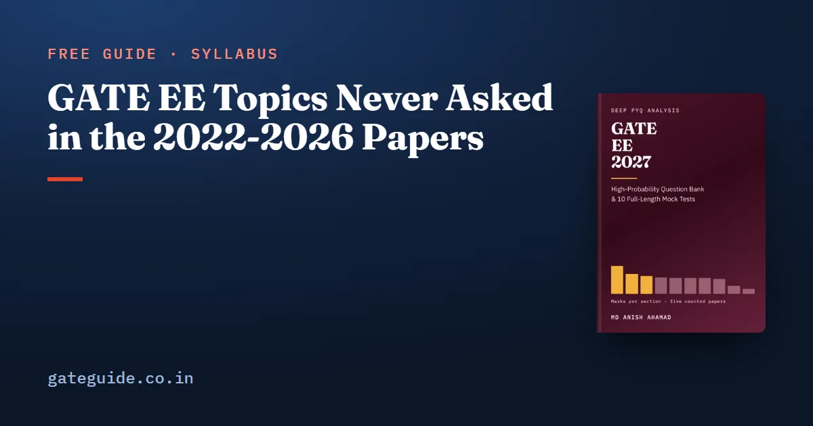

GATE EE Topics Never Asked in the 2022-2026 Papers

Thirteen topic groups named in the GATE EE syllabus produced no counted question in the five papers from 2022 to 2026. They run from magnetic circuits and per-unit quantities to oscilloscopes, VCOs and Schmitt triggers. A zero is not permission to skip: the topics are still named, and no past paper can prepare you for them. This guide names all thirteen, teaches the core idea of each in a paragraph, and shows how to give them a short, honest reading instead of weeks.
In this guide
Key takeaways
- Thirteen of the 84 technical topic groups drew no counted question in five papers.
- Eleven of the thirteen sit in three sections: Power Systems, Measurements, and Analog and Digital Electronics.
- The 2024, 2025 and 2026 syllabi named every one of them, so the zero is a real gap, not a syllabus change.
- "Never asked" means no question was about the topic; some ideas, such as RMS and per-unit, are used inside other questions.
- Most of the thirteen rest on one or two formulas and reward a careful first reading.
- A zero says nothing about 2027; five papers cannot tell a rare topic from one not drawn yet.
What "never asked" means
The GATE EE 2027 book placed every counted question into one topic group, a cluster of syllabus phrases. A group is never asked if no counted question was labelled with it as what the question asks.
That is narrower than it sounds. An inductance was computed from core geometry in 2023 (Q53), but the question was about a transformer and was counted in Electrical Machines. RMS values appear inside Power Electronics questions. Per-unit values are the units of a 2025 fault question. So read the list as "never the subject of a question", not "never used".
The thirteen groups
| Section | Topic group never asked, 2022-2026 |
|---|---|
| Electromagnetic Fields | Inductance, magnetomotive force, reluctance, magnetic circuits |
| Signals and Systems | RMS and average value of a periodic waveform |
| Power Systems | Power generation, AC and DC transmission concepts |
| Power Systems | Series and shunt compensation |
| Power Systems | Electric field distribution and insulators |
| Power Systems | Per-unit quantities |
| Measurements | Digital voltmeters and multimeters |
| Measurements | Phase, time and frequency measurement |
| Measurements | Oscilloscopes |
| Analog and Digital Electronics | Oscillators and feedback amplifiers |
| Analog and Digital Electronics | Active filters, Sallen Key, Butterworth |
| Analog and Digital Electronics | VCOs and timers |
| Analog and Digital Electronics | Schmitt triggers, sample and hold circuits |
Remember: A topic that past papers have not asked is precisely the topic past-paper practice will never make you meet.
The core idea of each, one paragraph at a time
Magnetic circuits
A magnetic circuit treats flux like current. The magnetomotive force drives flux through a reluctance , and inductance is .
Worked example, with made-up values: a core of length 0.3 m, relative permeability 1000 and area 5 cm², wound with 200 turns.
RMS and average values
The average is the mean of the waveform over a period; the RMS is the square root of the mean of its square. Average the square first, then take the root. Components at different frequencies combine as the root of the sum of squared RMS values.
Generation and transmission concepts
Know how thermal, hydro and nuclear plants produce power, and the load terms: load factor, plant factor, diversity factor. For transmission, know why HVDC suits long distances and cables: no reactive power or charging current on the link, at the cost of expensive converter stations.
Series and shunt compensation
A series capacitor cancels part of the line reactance, raising the power a line can carry. Shunt capacitors supply reactive power and lift voltage under heavy load; shunt reactors absorb it and hold voltage down on light load.
Insulators and field distribution
In a string of disc insulators, the unit nearest the line carries the most voltage, because of the shunt capacitance to earth. String efficiency is the string voltage divided by the number of units times the largest unit voltage.
Worked example: three units with a ratio of shunt to self capacitance . The unit voltages are in the ratio , so the efficiency is .
Trap: String efficiency falls as you add units, even though the string withstands more voltage. Do not confuse the two.
Per-unit quantities
Express every quantity as a fraction of a chosen base. On a change of base, impedance scales by the new MVA over the old, times the square of old voltage over new. A reactance of 0.15 pu on 40 MVA becomes pu on 100 MVA at the same voltage.
Digital voltmeters and multimeters
A dual-slope meter integrates the input for a fixed time and times the discharge against a reference; it rejects mains hum when the integration time is a whole number of mains periods. A -digit display counts to 1999.
Phase, time and frequency measurement
A counter reads frequency as counts divided by gate time, with a one-count error, so measure period instead at low frequency. Lissajous figures give a frequency ratio from the number of tangencies on each axis.
Oscilloscopes
Read frequency as one over the number of divisions times the time per division. A scope's rise time is about 0.35 divided by its bandwidth, and a probe must be compensated.
Oscillators and feedback amplifiers
Negative feedback divides gain by and widens bandwidth by the same factor. An oscillator meets the Barkhausen criterion: loop gain of exactly one with zero total phase at the oscillation frequency.
Active filters
A Butterworth response is maximally flat and falls at 20n dB per decade for order n. The Sallen-Key circuit realises a second-order section with one op-amp.
VCOs and timers
A VCO gives an output frequency proportional to a control voltage. A 555 astable runs between one-third and two-thirds of the supply.
Schmitt triggers and sample-and-hold
A Schmitt trigger is a comparator with positive feedback and two thresholds. A sample-and-hold holds a capacitor voltage, which droops at leakage current divided by capacitance.
In one line: Each of the thirteen is one formula and one idea deep; an evening each is enough for a first careful reading.
How to fit them in
- Learn per-unit quantities inside Power Systems, not separately.
- Give the other twelve one dedicated week in the middle of your plan.
- Work a handful of problems on each, not dozens.
- Revisit all thirteen for half a day in the last month.
Plan that week against your calendar in the GATE 2027 exam dates guide, and practise the formula-driven ones on the virtual calculator. Keep General Aptitude running beside them. The 2027 paper is set under IIT Madras, which set none of the counted papers, as the organising-institute guide explains. The book writes questions on every never-asked group and labels each as resting on the syllabus alone.
Quick revision
- Thirteen named groups, no counted question in 2022-2026.
- Eleven sit in Power Systems, Measurements, and Analog and Digital Electronics.
- Inductance from a magnetic circuit: , .
- String efficiency falls as units are added.
- Per-unit change of base scales with MVA ratio and voltage ratio squared.
- A zero is a gap in the record, not a reason to skip.
- One week, a handful of problems each, and a revisit in the last month.
Frequently asked questions
Which GATE EE topics have never been asked recently?
Counted from the five official papers of 2022 to 2026, thirteen syllabus topic groups produced no question of their own. They include magnetic circuits, RMS and average values, per-unit quantities, compensation, insulators, digital meters, oscilloscopes, oscillators, active filters, timers and Schmitt triggers. All are still named in the 2027 syllabus.
Can I skip GATE EE topics that were never asked?
It is not advisable. Every one of the thirteen is named in the 2027 syllabus, and the 2024, 2025 and 2026 papers were set on syllabi that named them too, so their absence is a real gap rather than a syllabus change. Five papers are too few to tell a rare topic from one not drawn yet. Give each a short reading.
How much time should I give the never-asked GATE EE topics?
Most are short, built on one or two formulas. A practical approach is one dedicated week in the middle of your plan for a careful first reading and a few problems on each, plus a half-day revisit in the last month. Per-unit quantities deserve more and belong inside Power Systems.
Are per-unit quantities really never asked in GATE EE?
No counted question from 2022 to 2026 was about per-unit quantities on their own, but per-unit values are the working units of fault and distribution questions counted elsewhere. So the idea is used constantly even though it is never the topic. Learn it thoroughly with Power Systems.
Sources
Dates, fees and the syllabus are set by the GATE 2027 organising institute and can change. Always confirm at gate2027.iitm.ac.in.